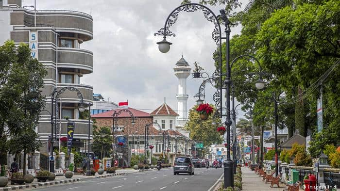

text color, adalah salah satu properti CSS yang digunakan untuk mengubah warna text tiap elemen HTML. kode warna ini #5D8233
text color, adalah salah satu properti CSS yang digunakan untuk mengubah warna text tiap elemen HTML. kode warna ini #F11A7B
text color, adalah salah satu properti CSS yang digunakan untuk mengubah warna text tiap elemen HTML. kode warna ini #2B3A55
ini merupakan teks background-color, kode warnanya yaituuu #B8405E
Border dalam CSS berfungsi untuk membuat garis tepi sebuah objek HTML.
Border ini dengan "groove border" yang diberi warna navy
Border ini dengan "solid border" yang diberi warna peach
Border ini dengan "dotted border" yang diberi warna pink
Border ini dengan "double border" yang diberi warna maroon.
margin digunakan untuk menciptakan ruang di sekitar elemen, di luar batas yang ditentukan.
font-family (jenis font yang lebih spesifik)
teks ini menggunakan font Times New Roman
teks ini menggunakan font Arial
teks ini menggunakan font Lucida Console
max-width digunakan untuk mengatur lebar maksimum elemen.
float menentukan bagaimana sebuah elemen harus mengambang. Properti ini float digunakan untuk memposisikan dan memformat konten misalnya membiarkan gambar mengambang ke kiri ke teks dalam wadah
Float terdiri dari beberapa elemenya itu:
contoh float none:
 Kata Bandung berasal dari kata bendung atau bendungan karena terbendungnya sungai Citarum oleh lava Gunung Tangkuban Parahu yang lalu membentuk telaga. Legenda yang diceritakan oleh orang-orang tua di Bandung mengatakan bahwa nama Bandung diambil dari sebuah kendaraan air yang terdiri dari dua perahu yang diikat berdampingan yang disebut perahu bandung yang digunakan oleh Bupati Bandung, R.A. Wiranatakusumah II, untuk melayari Ci Tarum dalam mencari tempat kedudukan kabupaten yang baru untuk menggantikan ibu kota yang lama di Dayeuhkolot.
Daftar tautan navigation bars, memiliki navigasi yang mudah digunakan adalah penting untuk membangun situs web.
dibagi menjadi 2 yaitu:
unsur kontrol grafis, mirip dengan kotak daftar, yang memungkinkan pengguna untuk pilih satu nilai dari daftar.
Form biasanya digunakan untuk mengumpulkan data dari pengunjung web kita. Mulai dari form untuk login, form kontak, form untuk pendaftaran user, bahkan untuk mengirimkan data antar halaman web.